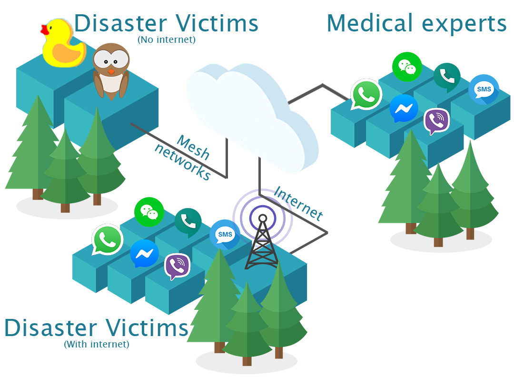
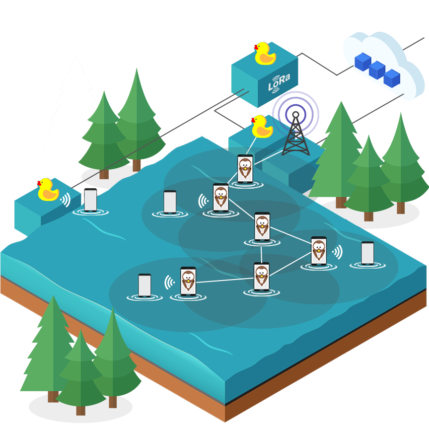
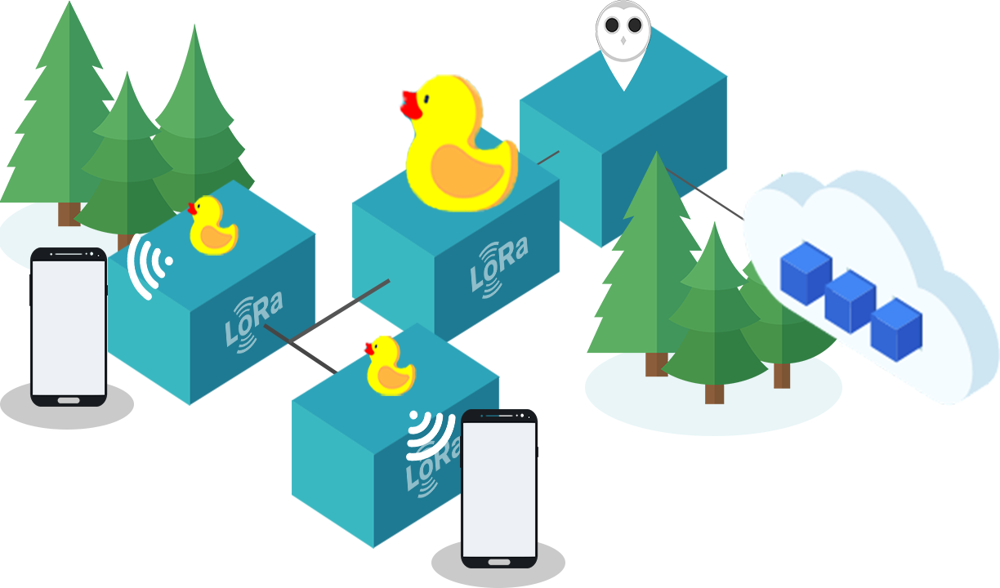
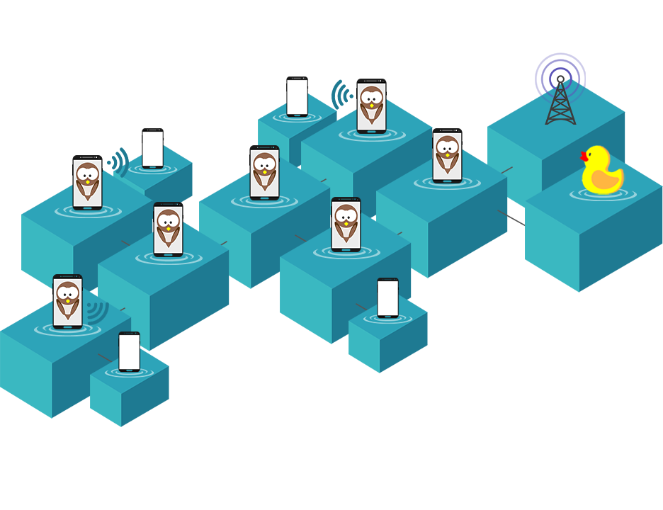
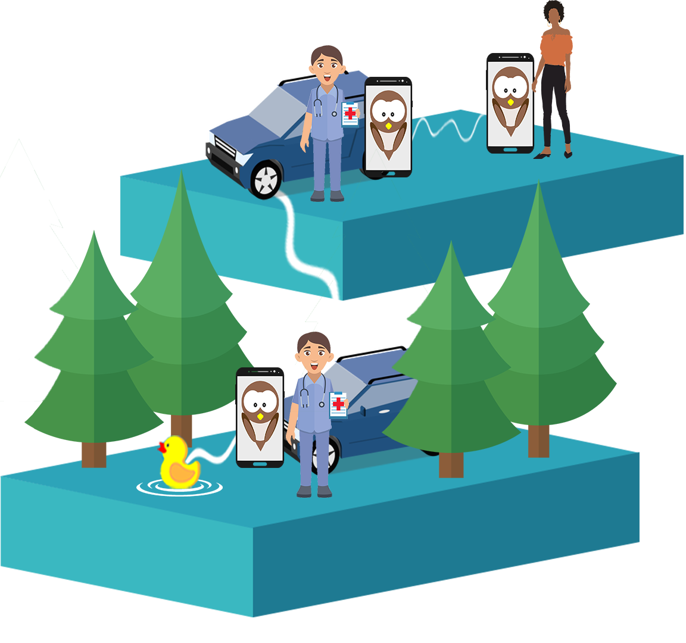

"A truely ubiquitous network to connect disater victims with medical experts and communities; agnostic of devices, location, connectivity, application/sysetms in use"
The challenge
add
Disaster victims need access to medical help and expertise
Victims and medical teams on ground need expert expert medical advise,
access to information related to symptons/medicines/precautions to ensure medical well-being
add
Communication is major obstacle between victims and help
During disasters, there always are people (doctors, nurses, experts) around the world willing to help the victims.
The key missing component is a medium to connect the HELP with those in NEED.
For example - A doctor from USA has no way to help disaster victims in India
add
Existing media of communication face limitations during disaters
There exist many platforms for communication, but they have fundamental issue -
Victims and responder have to worry about having accounts on these platforms,
being 'connected' to each other,
having access to these platforms (even when internet is down),
having correct device to access the platforms,
being able to share data securely in rquired format, and so on.
"Creating a new communication platform and asking all victims / responders to onboard it is impossible.
It would add to confusion rather than helping the victims"
The Solution
"Uber for medical and psychological support during disasters"
Disaster victims and medical workers
Can reach medical expertise through any available online / offline communication interfaces (Read more)
Medical experts / Community members
Can signup from anywhere in the world through any available social medial platform or messging application
(Whatsapp, FB Messenger, SMS, WeChat, Hangouts, etc).
SparrowNet will verify the credentials of the individual who signed-up and determine expertise level and field.
How does SparrowNet connect them?
SparrowNet takes messages comming from disaster victims, recognizes the type of help the victim needs using NLP and matches the victim to relevant medical experts.
The victim need not be on the same communiucation platform or in vicinity of the medical expert.
Once a medical expert is matched, messages and media is transfered in an end-to-end secure manner. Conversations are securely stored on Cloud to assure accountability of medical experts.

The Solution
"Uber for medical and psychological support during disasters"
Disaster victims and medical workers
Can reach medical expertise through any available online / offline communication interfaces (Read more)
Medical experts / Community members
Can signup from anywhere in the world through any available social medial platform or messging application
(Whatsapp, FB Messenger, SMS, WeChat, Hangouts, etc).
SparrowNet will verify the credentials of the individual who signed-up and determine expertise level and field.
How does SparrowNet connect them?
SparrowNet takes messages comming from disaster victims, recognizes the type of help the victim needs using NLP and matches the victim to relevant medical experts.
The victim need not be on the same communiucation platform or in vicinity of the medical expert.
Once a medical expert is matched, messages and media is transfered in an end-to-end secure manner. Conversations are securely stored on Cloud to assure accountability of medical experts.
Disaster victims and medical workers
1. Communication when traditional network is available
Talk to a medical expert anytime anywhere through chat interface accessible through ANY MAJOR CHAT APP
Reach out to sparrow through platform of your choice. SparrowNets routes you to available experts who can answer your queries.
Experts are allocated intelligently based on location (city, country), language, type of query, etc.
You need not be connected to the medical expert before-hand and the medical expert need not be using same platform as you.
SparrowNet is end-to-end secure and you can choose to be anonymous!
Sharing media is supported! (If the messaging platform supports media sharing)
Enter chatbot screenshots here...
2. Communication when traditional network is un-available
SparrowNet ensures connectivity even when traditional networks are unavailable through a combination of two 'Mesh networks'

2. Communication when traditional network is un-available
SparrowNet ensures connectivity even when traditional networks are unavailable through a combination of two 'Mesh networks'
LoRa based mesh - Sparrow platform
favorite Project owl
(Visit website)
Project Owl's clusterduck network eables communication during disasters using a LoRa based mesh.
Disaster victims can connect to Wifi available through 'ducks' to send information to the world.
Clusterduck in it's current form does not support bi-directional communication. We modified Clusterduck to achieve 2 way communication in order to make sparrowNet accessible through project owl.

LoRa based mesh - Sparrow platform
favorite Project owl
(Visit website)
Project Owl's clusterduck network eables communication during disasters using a LoRa based mesh.
Disaster victims can connect to Wifi available through 'ducks' to send information to the world.
Clusterduck in it's current form does not support bi-directional communication. We modified Clusterduck to achieve 2 way communication in order to make sparrowNet accessible through project owl.
SparrowMesh
SparrowMesh is a smartphone based P2P Ah-hoc mesh network based on smartphones.
It uses Wifi, Bluetooth, BLE, Sound (Every available communication radio) on smartphones for transfering data.
Though the primary motive of SparrowMesh is to connect disaster victims to SparrowNet (Internet), sparrowMesh also enables communication between local-communities.

SparrowMesh
SparrowMesh is a smartphone based P2P Ah-hoc mesh network based on smartphones.
It uses Wifi, Bluetooth, BLE, Sound (Every available communication radio) on smartphones for transfering data.
Though the primary motive of SparrowMesh is to connect disaster victims to SparrowNet (Internet), sparrowMesh also enables communication between local-communities.
SparrowMesh is built for offline first communication. Nodes in SparrowNet (Smartphones i.e users) can move around, carrying data with them.
Disaster victims can communicate with community around them, and broadcast updates regarding their health and well-being over SparrowNet.
Tracking family members is often a major challenge in non-internet situations.
SparrowMesh enables communications where traditional networks and fixed mesh networks (Like Project Owl) fail.

SparrowMesh is built for offline first communication. Nodes in SparrowNet (Smartphones i.e users) can move around, carrying data with them.
Disaster victims can communicate with community around them, and broadcast updates regarding their health and well-being over SparrowNet.
Tracking family members is often a major challenge in non-internet situations.
SparrowMesh enables communications where traditional networks and fixed mesh networks (Like Project Owl) fail.
Connectivity options
Sparrow app installed
Use Sparrow App to reach global SparrowNet community and local community present on SparrowMesh.
Every phone with Sparrow App is a node in SparrowMesh.
Messages sent through Sparrow App are sent over the SparrowMesh till they reach a node connected to internet or duck.
Sparrow app not installed
Devices not having Sparrow App can connect to SparrowNet by access Wifi endpoints made available through ducks and nodes in SparrowMesh.
All ducks and smartphones with Sparrow app create a Wifi network and deliver SparrowNet web-applets through this Wifi network.
Other devices can access these apps, and data is transfered through SparrowMesh / Clusterduck.
Medical experts, first responders, support communities
"Helping disaster victims is as easy as replying to a Whatsapp message"
4 Easy steps to use SparrorNet:
1. Send a message to Sparrow through messaging platform of choice
2. Answer some simple questions about your field of expertise
3. Upload documents and get verified
4. Wait for disaster victim's questiosn and queries to reach you!